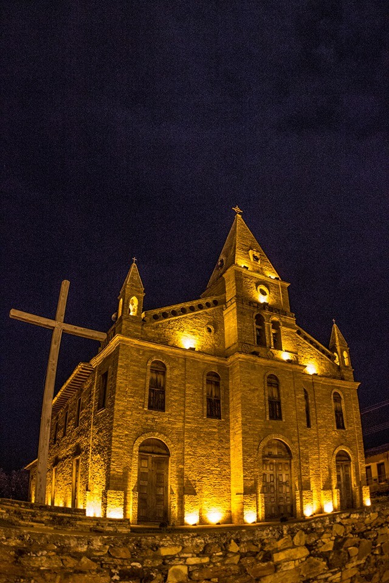
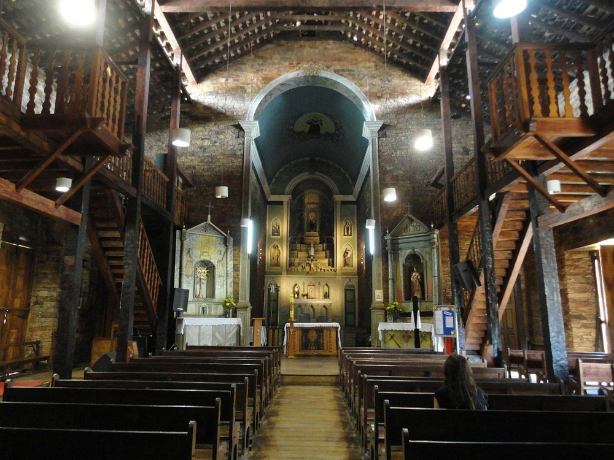
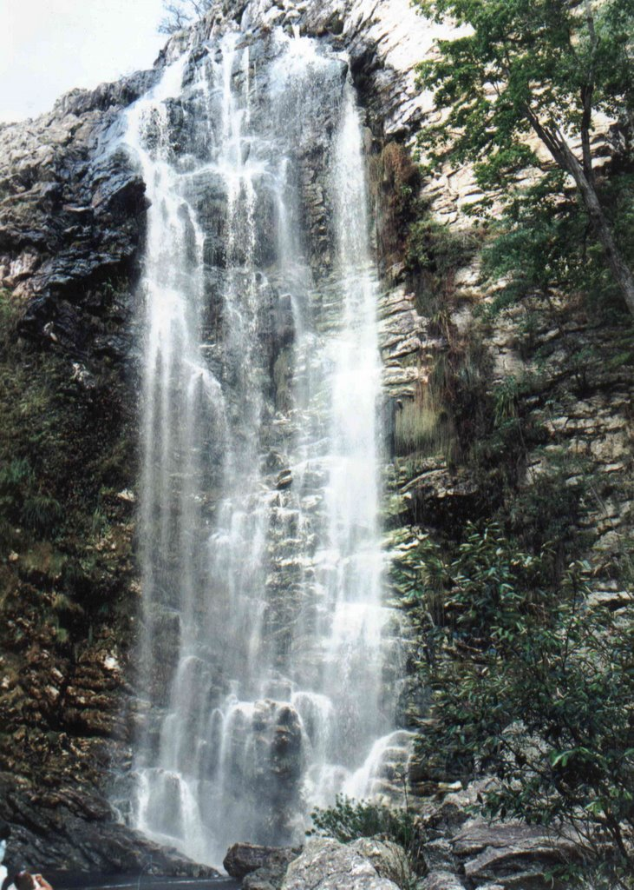
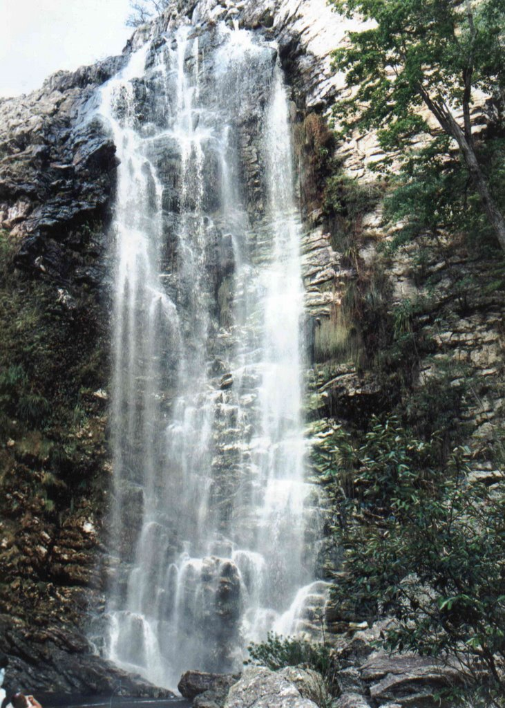
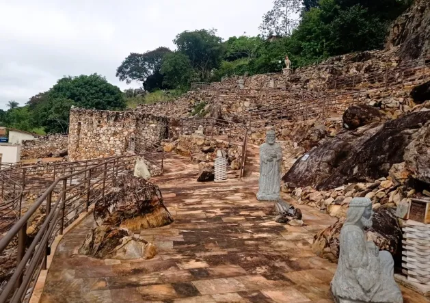
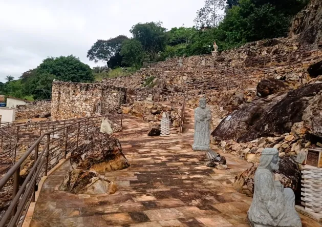

Bem-vindo à Grão Mogol: O Encanto do Norte de Minas!
Descubra a riqueza histórica, a beleza natural exuberante e a cultura acolhedora de Grão Mogol, uma joia encravada no coração do Norte de Minas Gerais.

O que Grão Mogol oferece?
Rica História
 Ruas de pedra e casarões coloniais contam séculos de história.
Natureza Exuberante
 

Cachoeiras, serras e trilhas esperam por você.
Cultura Viva
 

Festas tradicionais, o famoso Presépio de Grão Mogol e o artesanato típico encantam visitantes.
Explore Grão Mogol em Vídeo!
Assista a um vídeo que mostra um pouco das belezas e do dia a dia da cidade.